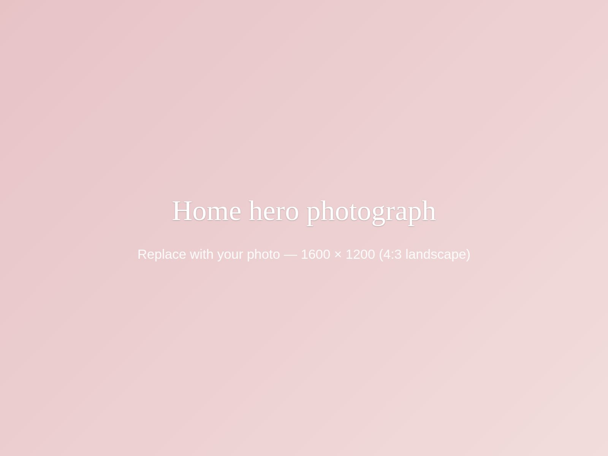
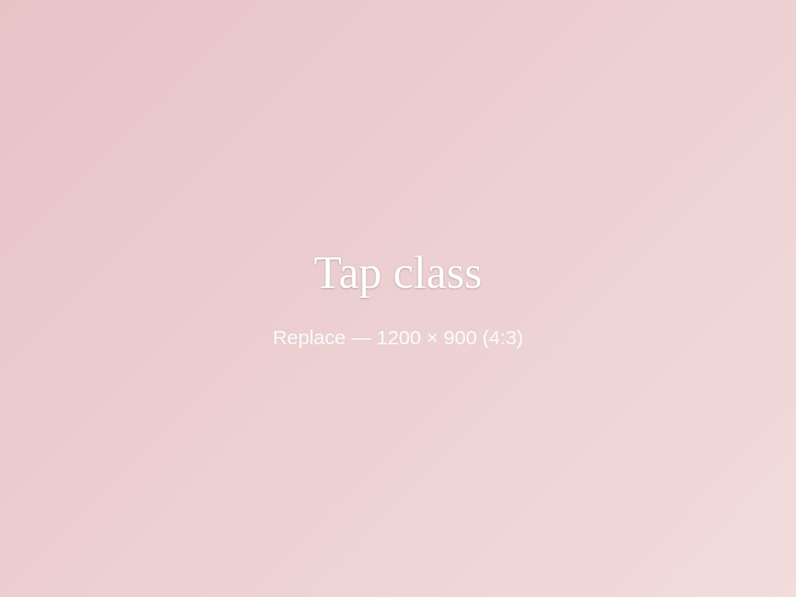
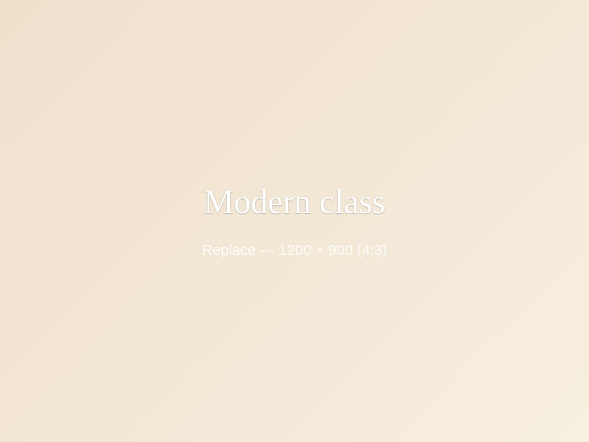

Ballet
The foundation of everything. Posture, poise, strength and control, taught with care and a good deal of imagination for the youngest dancers.
Stretford
Ballet, Tap and Modern classes for ages 3–18 in Stretford, with NATD examinations and the kind of warm, encouraging teaching that makes children want to come back every week.

Welcome to DW Dance
Donelon Wild School of Dance has been teaching young dancers in Stretford since 2016 — and in that time one thing has never changed: every child is taught as an individual.
Some of our students arrive at three years old, wobbling through their first plié, and are still dancing with us as teenagers. Others join at eleven, having never danced before. Both are equally welcome. We teach Ballet, Tap and Modern from complete beginner right through to student grade levels, and we prepare dancers for National Association of Teachers of Dancing (NATD) examinations when they’re ready — never before.
What we teach
The foundation of everything. Posture, poise, strength and control, taught with care and a good deal of imagination for the youngest dancers.

Rhythm, musicality and a lot of noise. Tap builds coordination and timing faster than almost anything else — and children adore it.

Expressive, energetic and current. Modern gives dancers freedom to interpret music in their own way while still building serious technique.
On stage
Standing on a stage changes a child, and our dancers get the chance to do exactly that.
We stage our own show every other year in a proper theatre, with costumes, lighting and a curtain call. Every student who wants to take part performs.
We also take part in local dance competitions throughout the year. Competition participation is by invitation and is reserved for dancers who have demonstrated the appropriate level of technique, performance skills, and commitment. Teachers will be in touch if they feel your child is ready for this exciting opportunity.
From our families
“She was so shy when she started. Two years on she’s front row in the show and won’t stop practising in the kitchen.”
“The teaching is properly rigorous but never harsh. My daughter has come through three NATD grades with distinction and still loves every minute.”
“Both of mine go, different ages, different classes, and the school somehow makes each of them feel like the important one.”
Highlighted text is placeholder copy — replace with real, permitted quotes from your families.
Joining is simple
Email us with your child’s age and any dance experience they already have. We’ll tell you which class they should come to, and when and where it runs.
Your child joins the class we’ve suggested. Comfortable clothes they can move in are all they need to start.
If your child loves it, we’ll sort registration and fees and get them into the weekly routine.
Places in the most popular age groups do fill up, so it’s worth getting in touch early.